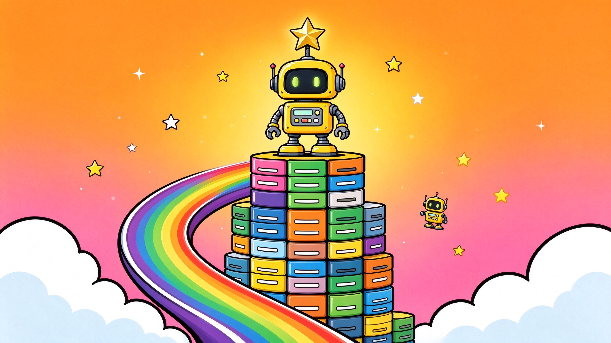
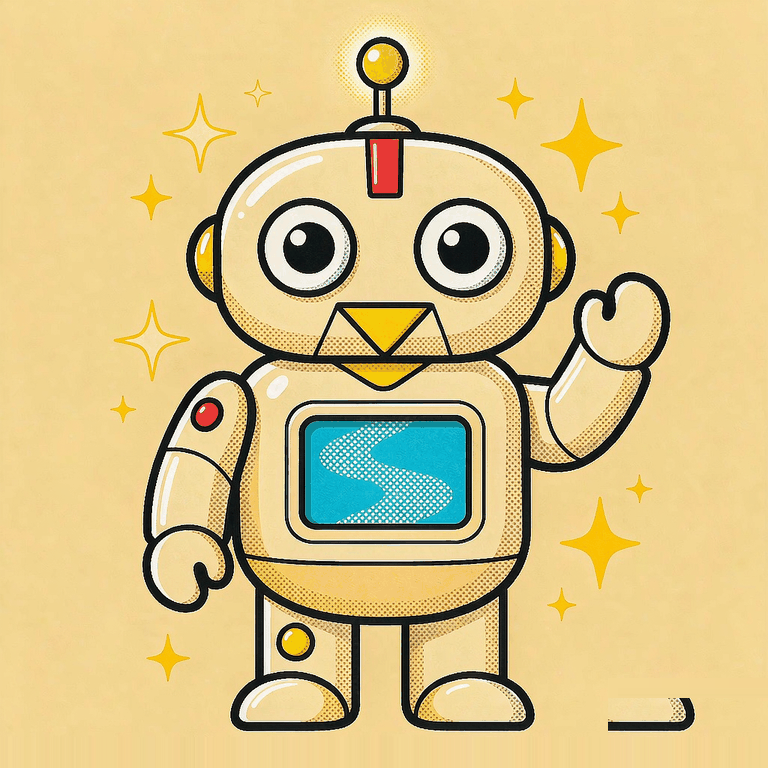

★
⚡
💥
!
📊 已学习
0
/
32
🏠 数塔之家
⚙️ 设置
🎵 音乐开
🔊 语音开启
📜 AI日志
🏠 返回大厅
⚙️ 声音设置
塔库的声线：
默认声音
试听
塔库语速：
1.0
塔库音调：
1.1
🎵 背景音乐（内置曲目，不用上传任何文件）：
默认曲子《数据高塔》，第一次点一下页面就会响起来。
音乐音量：
0.3
换成自己的 MP3（可选）：
🗑️ 重置学习进度
数塔
从零到AI数据大师的奇妙之旅

哇!
冲呀!

系统启动中...
🏠 数塔之家
数据库操作实战 · 真实 SQLite
已完成 0 / 0
💾 导出 .db
🧹 重置数据库
↩ 返回数塔
② SQL 控制台（这台数据库是真的）
内置函数：cos_sim(a,b)、vec_norm(a)
▶ 运行 (Ctrl+Enter)
🧽 清空
🔄 刷新状态
🗂 数据库状态
—
收起
点上面任意一张表，看它的列、索引和建表语句 👆